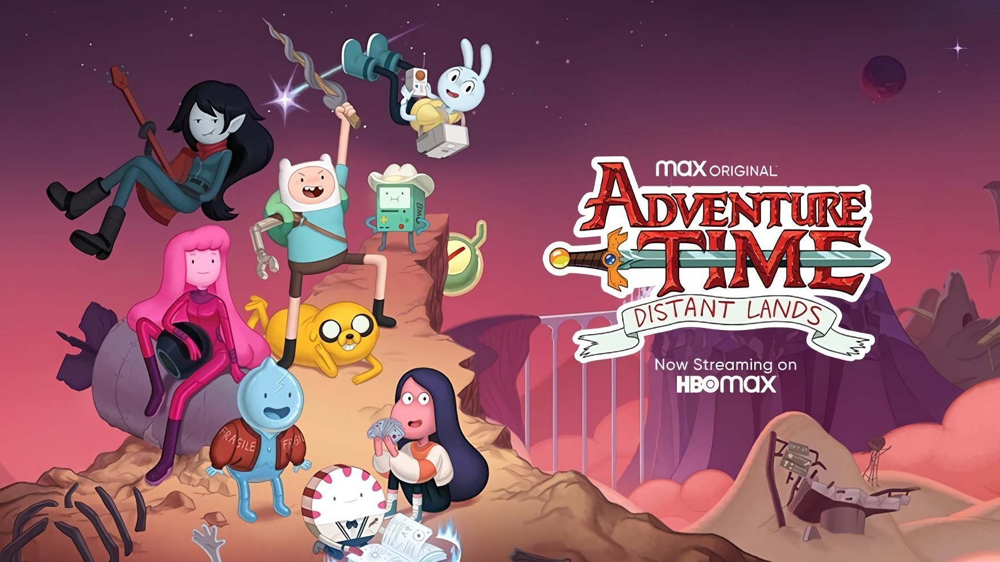
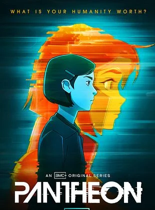
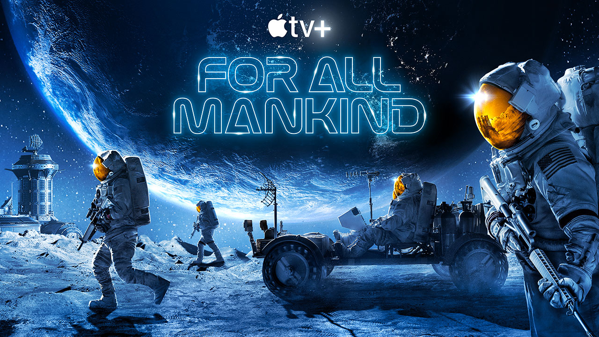

Após o sucesso de Hora de Aventura: Terras Distantes, a Cartoon Network e Max anunciaram a nova série derivada Hora de Aventura: Fichas e Espadas, prevista para estrear ainda em 2026. A produção promete expandir o universo de Ooo com personagens inéditos, mas mantendo o charme e a profundidade emocional que conquistaram fãs de todas as idades.
A trama acompanha Rosie, filha de Marceline e Bonnibel Bubblegum, que embarca em aventuras pelo reino com um grupo improvável de amigos. Finn e Jake aparecem em participações especiais, agora em papéis de mentores da nova geração.
Primal (also known as Genndy Tartakovsky's Primal or Primal: Tales of Savagery) is an
Years and Years é uma série de televisão dramática produzida em cooperação entre a BBC e HBO. Começou a ser transmitida na BBC One no Reino Unido.
Após meses de incerteza e especulações que deixaram os fãs mais ansiosos que o próprio Apocalipse, o Prime Video confirmou detalhes cruciais sobre o encerramento da jornada do anjo Aziraphale (Michael Sheen) e do demônio Crowley (David Tennant).
Ao contrário das temporadas anteriores, que contaram com seis episódios cada, a conclusão da série será apresentada como um episódio especial de longa duração (aproximadamente 90 minutos). Essa decisão veio após mudanças na produção, garantindo que a visão original de Terry Pratchett e Neil Gaiman receba o final digno que merece.

Pantheon, a aclamada série de animação adulta de ficção científica, continua ganhando novos fãs em 2026 após chegar à Netflix.

For All Mankind imagina uma realidade alternativa onde os soviéticos chegam à Lua antes dos EUA, prolongando a corrida espacial por décadas e impulsionando avanços tecnológicos e mudanças sociais. Criada por Ronald D. Moore
Eduardo Ferreira Proenca